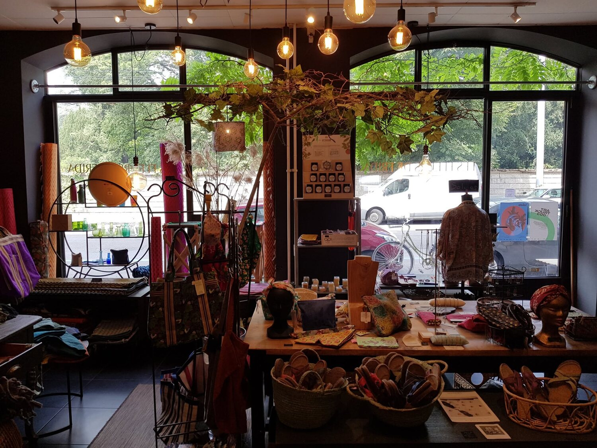
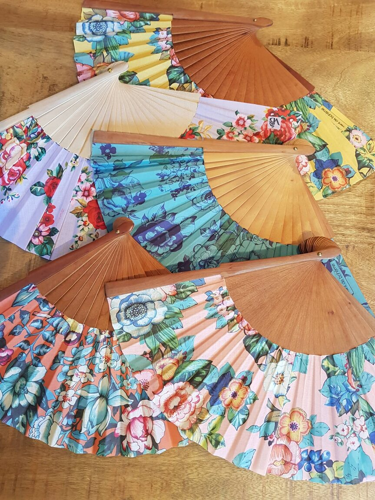
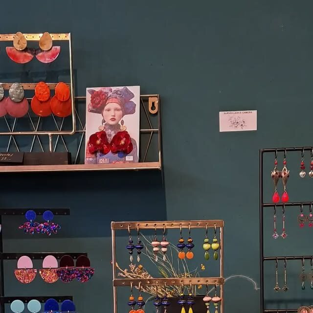
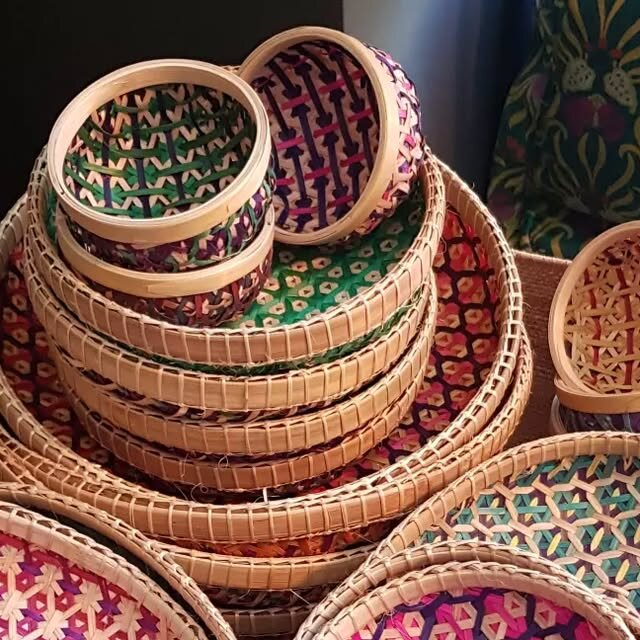
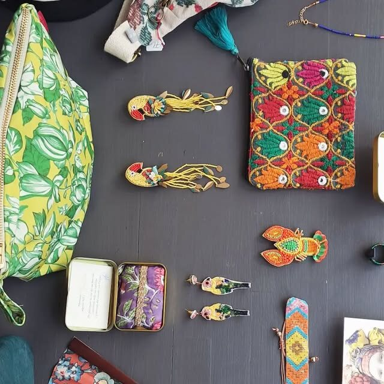
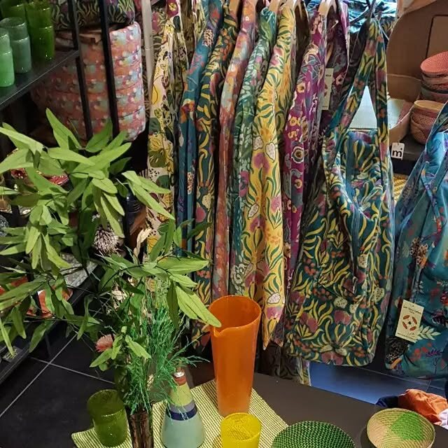
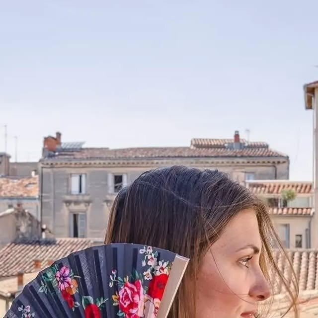
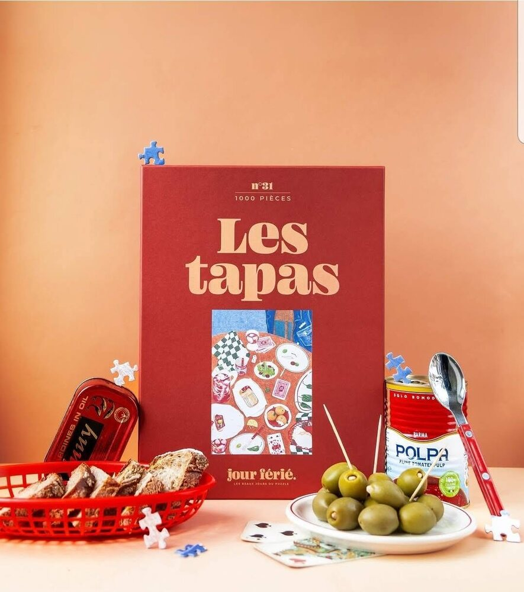
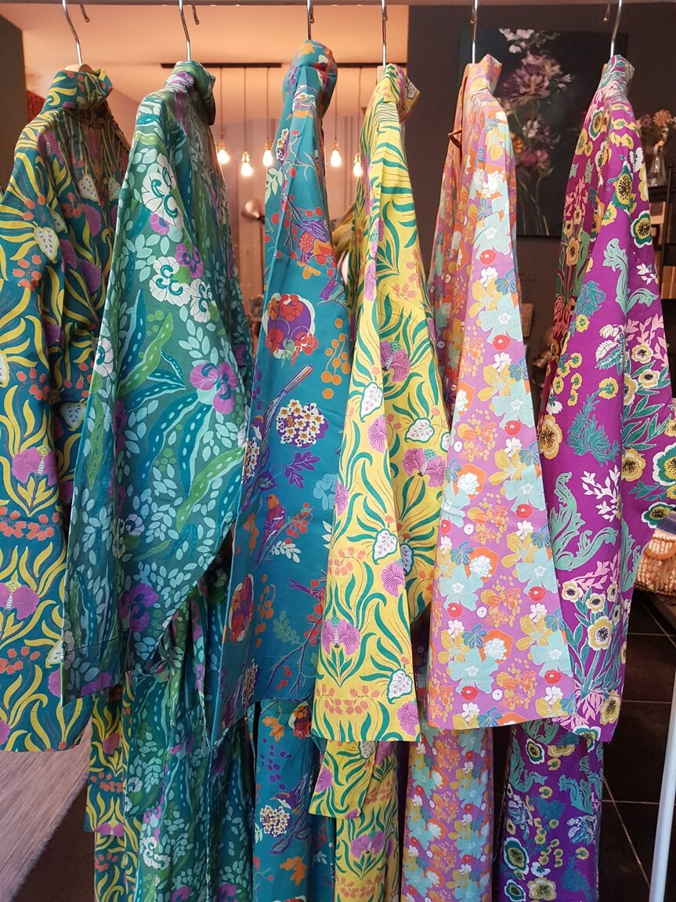

Atelier-boutique · Quartier des Bains, Genève
Fleurs, couleurs
& fait-main.
Éventails peints, bijoux brodés, tableaux floraux et artisanat chiné : une sélection joyeuse et colorée, imaginée boulevard de Saint-Georges.
- 100 % recommandéFacebook · 12 avis
- 2 400+ abonnéssur Instagram
- Bd de Saint-Georges 521205 Genève
La collection
Un cabinet de curiosités fleuri.
De la boucle d'oreille brodée au tableau floral, chaque pièce est choisie — ou peinte — pour sa couleur et son histoire. Voici ce qui vous attend en poussant la porte.
-
Tableaux & peintures
Les portraits floraux façon Frida et d'autres toiles hautes en couleur, peints à la main.
-
Décoration
De quoi fleurir la maison : petits objets, textiles et trouvailles pleines de vie.
-
Accessoires
Éventails peints, foulards et porte-monnaie brodés — les détails qui changent tout.
-
Bijoux
Boucles d'oreilles et broches brodées, colorées, souvent en pièce unique.
-
Vêtements
Blouses en coton brodé, robes fleuries et matières douces à porter au quotidien.
-
Artisanat du monde
Paniers tressés et pièces rapportées de loin — l'artisanat du Cambodge et d'ailleurs.
-
Seconde main
Une sélection de seconde main, pour une belle trouvaille à petit prix.
-
Livres cadeaux
Les jolis livres Jour férié — « Les tapas », « Sortir le chien », « Rien à se mettre ».
Les prix sont communiqués en boutique, et la sélection évolue au fil des arrivages et des saisons. Passez la porte, boulevard de Saint-Georges — il y a toujours une nouveauté.
L'atelier
Un atelier-boutique au cœur des Bains.
Les Fleurs de Frida, c'est une boutique comme un jardin d'intérieur : colorée, foisonnante, jamais tout à fait la même.
Boulevard de Saint-Georges, à deux pas du quartier des Bains, la boutique réunit ce qui se fait de plus joyeux à la main : éventails peints, bijoux brodés, blouses fleuries, paniers tressés et tableaux floraux — ces portraits façon Frida Kahlo qui lui donnent son nom.
Tout se choisit à l'œil et au coup de cœur, entre pièces d'artisanat rapportées de loin, créations et jolies trouvailles de seconde main. Les murs vert profond, les fleurs séchées et la lumière chaude font le reste.
Une communauté de plus de 2 400 personnes nous suit déjà sur Instagram, et sur Facebook la boutique est recommandée à 100 %. Le plus simple, pour comprendre, c'est encore de pousser la porte.
- Fait main
- Artisanat du monde
- Seconde main
- Pièces uniques

En images
La boutique en couleurs.
Éventails, bijoux, textiles et coins chinés — quelques images de ce qui vous attend.








Nous trouver
Au cœur du quartier des Bains.
Boulevard de Saint-Georges 52, entre la Jonction et Plainpalais. Poussez la porte.
Horaires
Les horaires ne sont pas affichés en ligne. Écrivez-nous ou appelez avant de passer — nous vous répondrons avec plaisir.
Un mot avant de venir ?
Contact
Passez nous voir, ou écrivez-nous.
Une question, une pièce qui vous fait de l'œil, une commande spéciale ? Appelez la boutique, écrivez-nous, ou venez simplement flâner entre les fleurs.